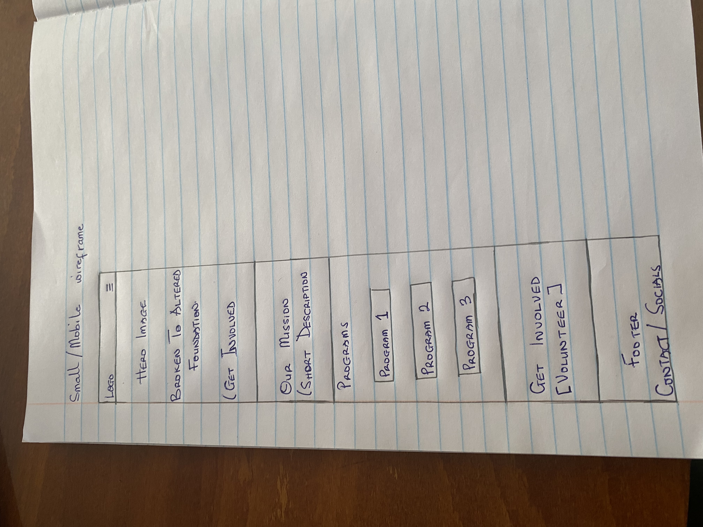
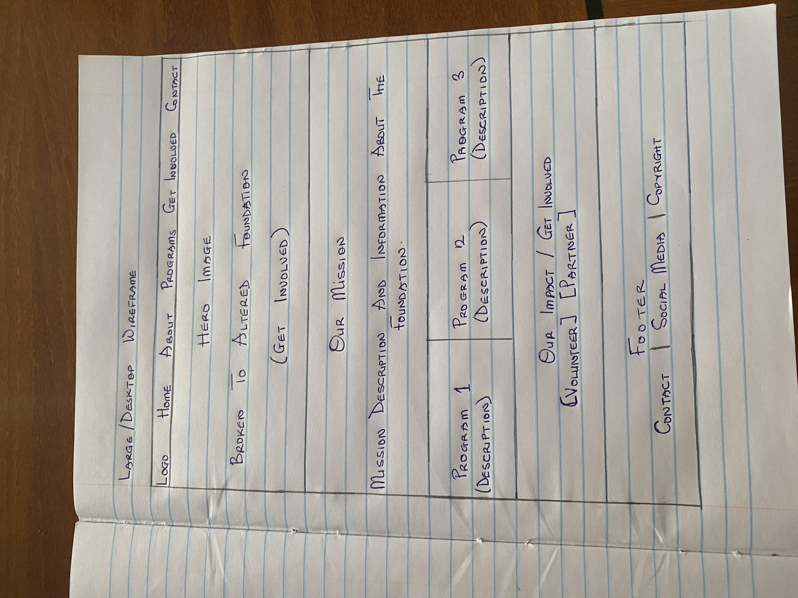

Getting Involved
How can I volunteer or become involved with the Broken To Altered Foundation?
Site Plan
WDD231 Individual Project
This site plan outlines the purpose, audience, visual identity, typography, and proposed structure for the Broken To Altered Foundation website.
The name Broken To Altered Foundation represents the organization's belief that difficult experiences do not have to define a person's future. The foundation focuses on helping people move from difficult circumstances toward growth, empowerment, and positive change.
The name was selected because it communicates transformation while remaining closely connected to the foundation's mission.
Proposed domain: brokentoaltered.org
The Broken To Altered Foundation website will introduce the foundation, communicate its mission and values, and provide information about its empowerment and community outreach initiatives.
The website will also provide information about programs, upcoming activities, volunteer opportunities, partnerships, and ways individuals can support the foundation's work.
How can I volunteer or become involved with the Broken To Altered Foundation?
What programs and outreach activities does the foundation provide?
How can my organization support or partner with the foundation?
The color scheme is designed to communicate warmth, transformation, hope, and professionalism. The colors will be used consistently throughout the website.
HEX: #6B1F2B
Used for headings, navigation, buttons, important accents, and branding elements.
HEX: #F7F3EE
Used as the primary background color to create a warm and welcoming appearance.
HEX: #C9A45C
Used for small accents, borders, highlights, and decorative elements.
Creating opportunities for people to grow, heal, develop, and become better versions of themselves.
Headings and major titles
Empowerment begins with transformation.
Body text, navigation, buttons, and labels
The foundation creates opportunities for individuals and communities to grow and thrive.
The wireframes show the basic structure and layout of the Broken To Altered Foundation home page for both small and large viewports.
Note: The wireframes are hand-drawn in black and white to meet the course requirements.

